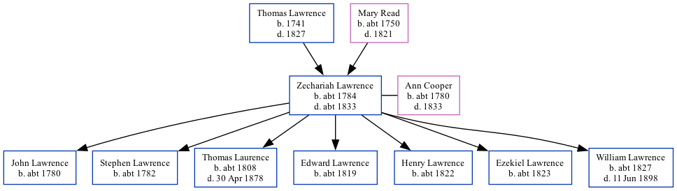

Zechariah Lawrence c1784 - c1833
[ Home ] | [ Calendar ] | [ Surnames Index ] | [ Family History ]A laborer and the child of Thomas Lawrence and Mary Read, Zechariah Lawrence, the 3 times great-grandfather of Nigel Horne, was born in Ash, Kent, England c. 17841,2, was baptized there at St Nicholas Church, The Street on Oct 17, 1784 and married Ann Cooper (with whom he had 7 children: John, Stephen, Thomas, Edward, Henry, Ezekiel and William) at St. Clements Church, Sandwich, Kent, England on Dec 18, 18073.
He died c. 1833 in Kent1,2 and was buried at St Mary The Blessed Virgin Church, Woodnesborough, Kent on Jul 27, 18332,3,4,5.
Parents
- Thomas was born in 1741
- Mary was born c. 1750
Children
- John was born c. 1780
- Stephen was born c. 1782
- Thomas was born c. 1808
- Edward was born c. 1819
- Henry was born c. 1822
- Ezekiel was born c. 1823
- William was born c. 1827
Citations
- East Kent Burial Index - Findmypast
- Kent Burials - Findmypast
- Familysearch.org (www.familysearch.org)
- England Deaths & Burials 1538-1991 - Findmypast
- England Deaths & Burials 1538-1991 - Findmypast
Media
England Marriages 1538-1973 - R_848375390
England Marriages 1538-1973 - R_848374675
East Kent Burial Index - GBPRS/D/407068856/1
Canterbury Burials - GBPRS/CANT/D/95295345
England Marriages 1538-1973 - R_848375540
Kent Baptisms - GBPRS/CANT/B/96650625
England Deaths & Burials 1538-1991 - R_277216734
England Deaths & Burials 1538-1991 - R_276657579
Family Tree
Generated by Ged2Site. Last updated on Jul 20, 2025